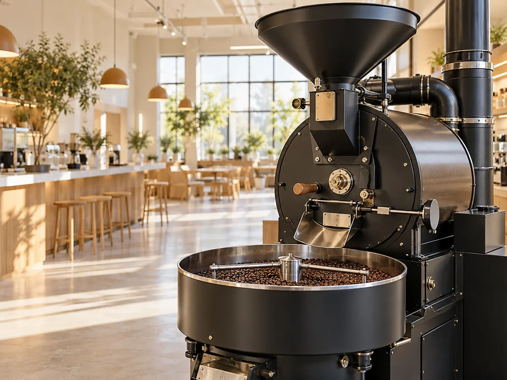

CONCEPT
店名が、そのまま
願いになっています
Be Mellow Cafe & Roasteryは、秋田駅から歩ける千秋公園ビルの1階にあります。 2024年4月19日に開きました。
Be Mellow ＝ We hope you will be happy
公式サイトに書かれている、店名の意味です。スペシャルティ珈琲を通じて、幸せに満ちた時間を届けたい、という願いが込められています。
焙煎は、シナモンローストとミディアムローストが中心です。深く焦がすのではなく、 浅めから中くらいで止める。そうすることで、コーヒー本来の風味と甘みが残ります。 「こころ穏やかな時間。」という言葉は、その淹れ方とつながっています。
